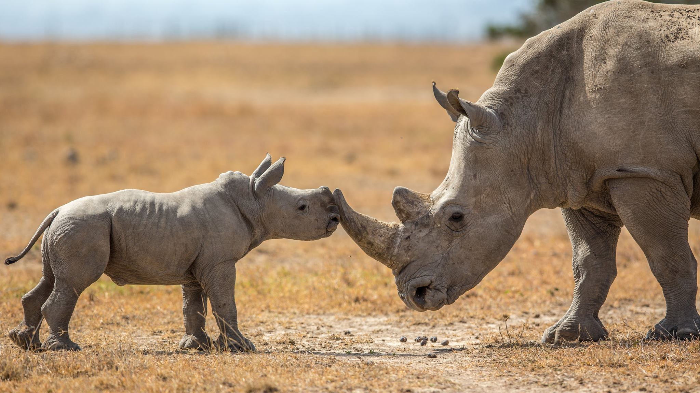
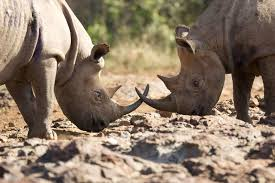
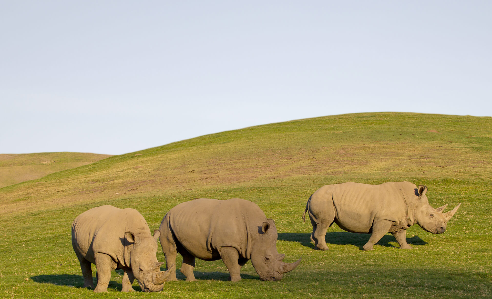
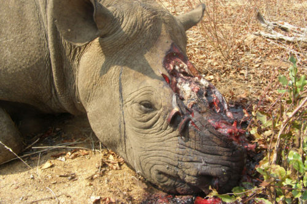
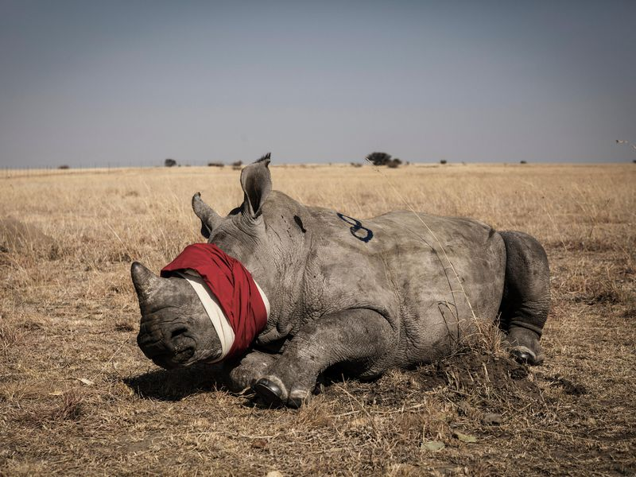
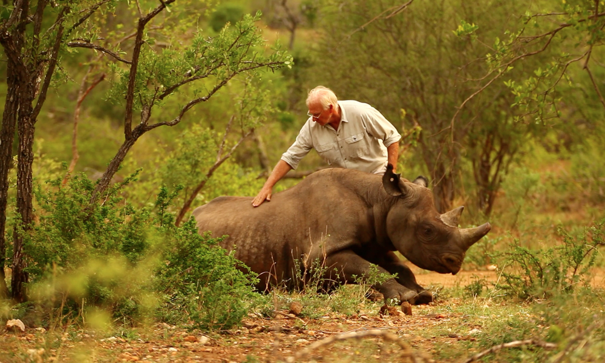

What is a Rhino?
Rhinoceros are large, herbivorous mammals identified by their characteristic horned snouts. The word "rhinoceros" comes from the Greek "rhino" (nose) and "ceros" (horn). Rhinoceroses can grow to 12 to 13 feet (3.7 to 4 meters) long and up to 6 feet (1.8 m) from hoof to shoulder. It weighs around 5,000 lbs. (2,300 kilograms).
Why should we save them?
Rhinos are going extinct. They have been around for 40 million years. Rhinos have been an important part of a wide range of ecosystems for millions of years. They are going extinct because poachers kill rhinos for the price they can get for the horns, land encroachment, illegal logging and pollution are destroying their habitat, and; political conflicts adversely affect conservation programmes. Lastly, Rhinos are an umbrella species. When protecting and managing a rhino population, rangers and scientists take in account all the other species interacting with rhinos and those sharing the same habitat. When rhinos are protected, many other species are too.
    How we can save them!
Some ways we can help save the Rhinos are don't buy Rhino horn products, adopt a Sumatran Rhino, or just adopt a Rhino. And last you can donate to WWF.
